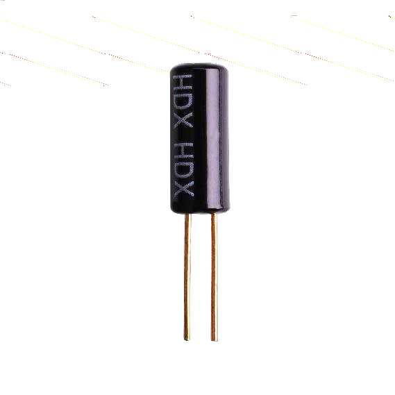
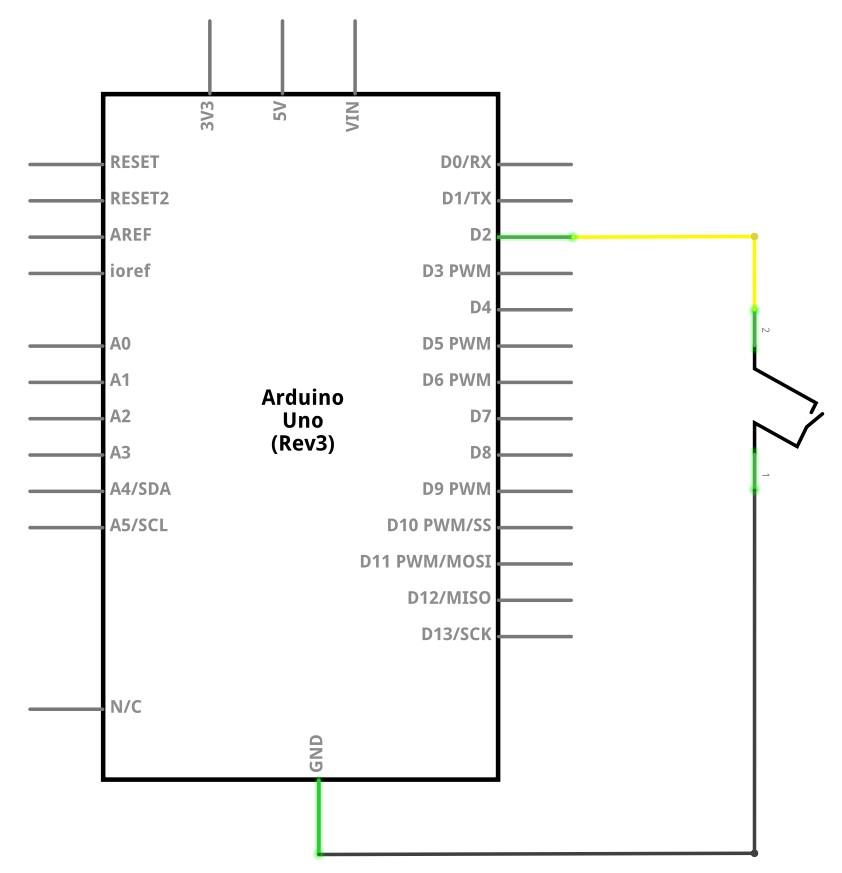
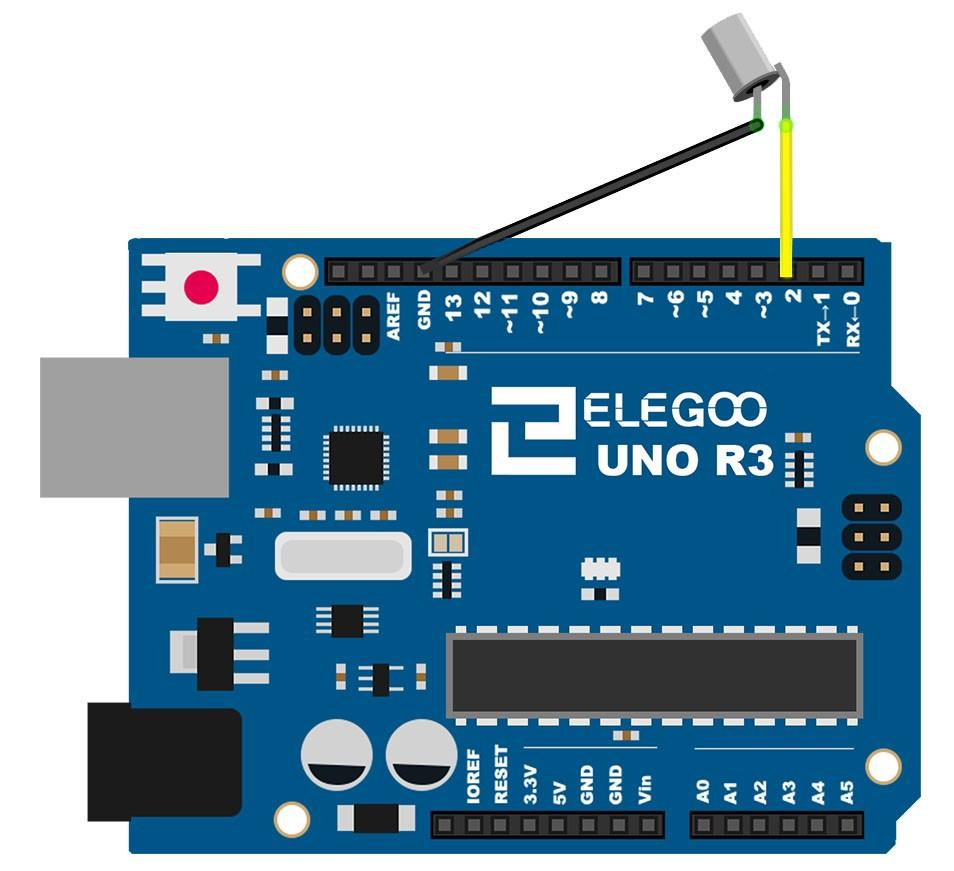
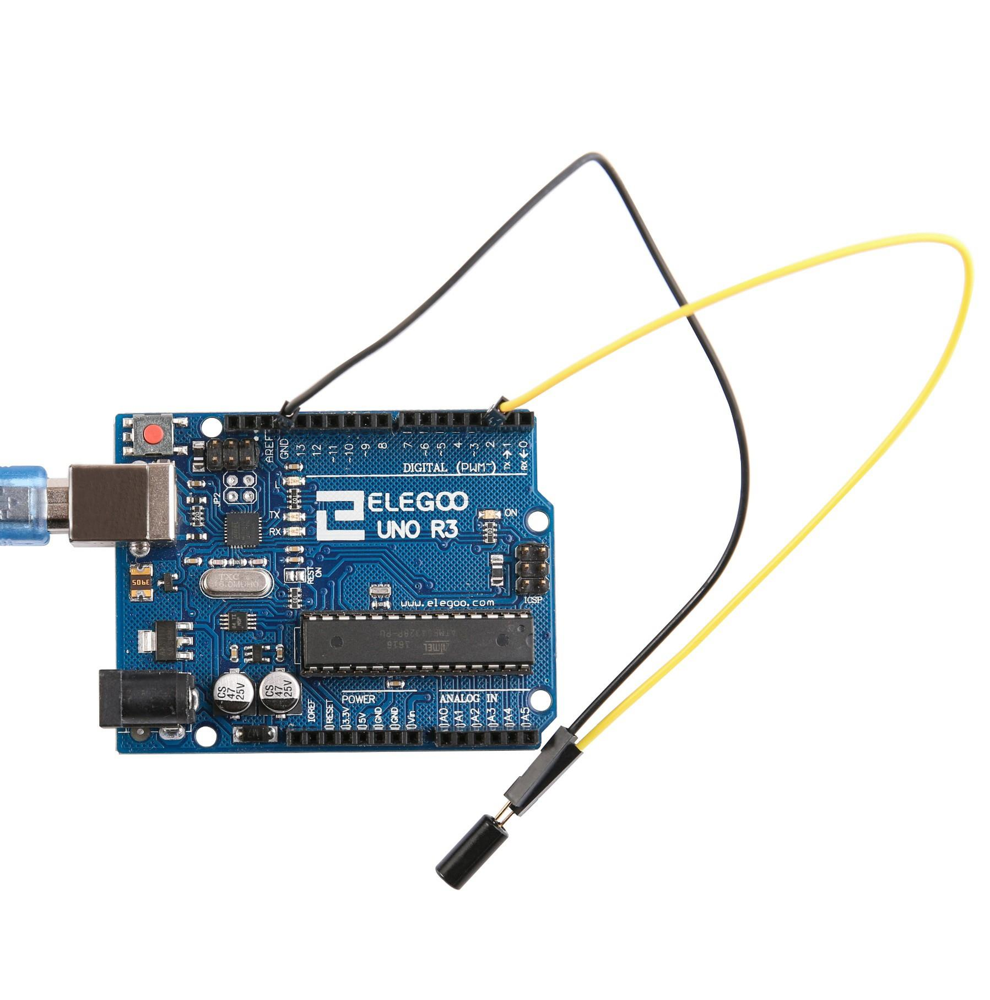

En esta lección, aprenderemos a cómo utilizar un sensor de inclinación para detectar un ángulo.
(1) x Elegoo Uno R3
(1) x Interruptor de inclinación bola
(2) x F-M cables (cables de hembra a macho DuPont)
Los sensores de inclinación nos permiten detectar la orientación y/o inclinación en la que el
componente se encuentra. Son componentes pequeños, económicos, de bajo consumo y fáciles de
usar.
Debido a su simplicidad, los hace adecuados para juguetes y otros aparatos electrónicos. A veces,
se conocen como "interruptores de mercurio", "interruptores de inclinación" o "sensores de bola
rodante" por razones obvias.
Se componen generalmente de una cavidad de una cierta clase (suelen ser cilíndricas) con una
masa libre conductora adentro, como una gota de
mercurio o una bola rodante.
Un extremo de la cavidad tiene dos elementos conductores (polos), cuando el sensor está
orientado hacia abajo, la masa rueda sobre los polos y los
cortocircuita, actuando como un interruptor de tiro.



Una vez efectuado todo el cableado, descargaremos el script del siguiente este link y lo cargaremos como hemos aprendido.

Volver al índice